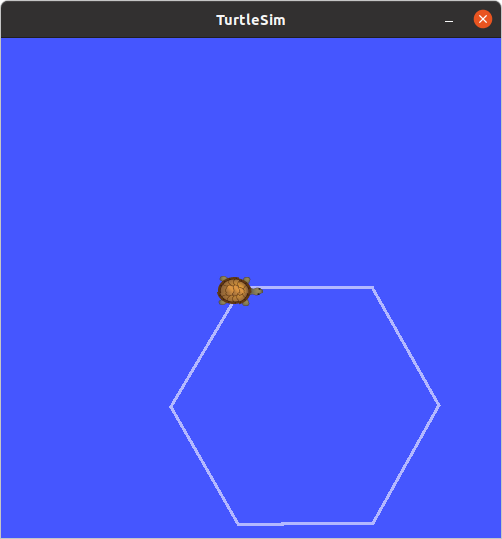

03. Python alapismeretek, ROS Publisher, ROS Subscriber
Elmélet
Python principles

- Interpreted, high-level programming language
- Name tribute to the comedy group Monty Python
- Powerful, still easy to learn, easy to use
- Readability
- Whitespace indentation

- Dynamically-typed
- Garbage colector and reference counting
- Object oriented programming
- Used in: AI, web applications, scientific computing, and many other areas
python3
Python syntax
import numpy as np
import math
class A:
def __init__(self, name):
self.name = name
def do_something(self):
# will do something
print(self.name + " is doing something.")
def count_to(self, n):
# count to n, tell if the number is odd or even
for i in range(n):
if i % 2 == 0:
print(i + ", it's even.")
else:
print(i + ", it's odd.")
if __name__ == "__main__":
a = A("John")
a.do_something()
a.count_to(10)
Gyakorlat
1: Teknőc mozgatása egyenes mentén
-
Írjunk ROS node-ot, amely előre, egyenes mentén megadott távolságra mozgatja a teknőcöt. Nyissunk meg egy terminált. Huzzuk létre a
~/ros2_ws/src/ros2_course/ros2_coursekönyvtárunkban aturtlesim_controller.pyfájlt:
cd ros2_ws/src/ros2_course/ros2_course touch turtlesim_controller.py
-
A
setup.pyfájlban adjunk meg egy új entry point-on:'turtlesim_controller = ros2_course.turtlesim_controller:main',
-
Másoljuk be a
turtlesim_controller.py-ba a program vázát:import math import rclpy from rclpy.node import Node class TurtlesimController(Node): def __init__(self): super().__init__('turtlesim_controller') def go_straight(self, speed, distance): # Implement straght motion here def main(args=None): rclpy.init(args=args) tc = TurtlesimController() # Destroy the node explicitly # (optional - otherwise it will be done automatically # when the garbage collector destroys the node object) tc.destroy_node() rclpy.shutdown() if __name__ == '__main__': main()
-
Indítsunk egy egy
turtlesim_node-ot, majd vizsgáljuk meg a topic-ot, amellyel irányíthatjuk. Két külön terminálablakban:ros2 run turtlesim turtlesim_noderos2 topic list ros2 topic info /turtle1/cmd_vel ros2 interface show geometry_msgs/msg/TwistVagy használjuk az
rqt_gui-t:ros2 run rqt_gui rqt_gui
-
Importáljuk a
geometry_msgs/msg/Twistüzenettípust és hozzuk létre a publishert aturtlesim_controller.py-ban:from geometry_msgs.msg import Twist #... # In the constructor: self.twist_pub = self.create_publisher(Twist, '/turtle1/cmd_vel', 10)
-
Implementáljuk a
go_straightmetódust. Számítsuk ki, mennyi ideig tart, hogy a megadott távolságot a megadott sebességgel megtegye a teknőc. Publikáljunk üzenetet, amivel beállítjuk a sebességet, majd várjunk a kiszámított ideig, ezután küldjünk újabb üzenetet, amellyel nullázzuk a sebességet. Egy kis segítség az API használatához:# Create and publish msg vel_msg = Twist() if distance > 0: vel_msg.linear.x = speed else: vel_msg.linear.x = -speed vel_msg.linear.y = 0.0 vel_msg.linear.z = 0.0 vel_msg.angular.x = 0.0 vel_msg.angular.y = 0.0 vel_msg.angular.z = 0.0 # Set loop rate loop_rate = self.create_rate(100, self.get_clock()) # Hz # Calculate time # T = ... # Publish first msg and note time when to stop self.twist_pub.publish(vel_msg) # self.get_logger().info('Turtle started.') when = self.get_clock().now() + rclpy.time.Duration(seconds=T) # Publish msg while the calculated time is up while (some condition...) and rclpy.ok(): self.twist_pub.publish(vel_msg) # self.get_logger().info('On its way...') rclpy.spin_once(self) # loop rate # turtle arrived, set velocity to 0 vel_msg.linear.x = 0.0 self.twist_pub.publish(vel_msg) # self.get_logger().info('Arrived to destination.')
-
Build-eljük és futtassuk a node-ot:
cd ros2_ws colcon build --symlink-install ros2 run ros2_course turtlesim_controller
2: Alakzatok rajolása

-
Implementáljunk adott szöggel történő elfordulást megvalósító metódust a
turtlesim_controller.py-ban, az egyenes mozgásshoz hasonló módon.def turn(self, omega, angle): # Implement rotation here
-
Implementáljunk a teknőccel négyzetet rajzoltató metódust az egyenes mozgást és a fordulást végrehajtó metódusok felhasználásával.
def draw_square(self, speed, omega, a):
-
Implementáljunk a teknőccel tetszőleges szabályos alakzatot rajzoltató metódust az egyenes mozgást és a fordulást végrehajtó metódusok felhasználásával.
def draw_poly(self, speed, omega, N, a):
3: Go to funkció implementálása

-
Vizsgáljuk meg a topic-ot, amelyen a
turtlesim_nodea pillanatnyi pozícióját publikálja.ros2 topic list ros2 topic info /turtle1/pose ros2 interface show turtlesim/msg/PoseVagy használjuk az
rqt_gui-t:ros2 run rqt_gui rqt_gui
-
Definiáljunk subscriber-t a topichoz és írjuk meg a callback függvényt.
# Imports from turtlesim.msg import Pose # Constructor self.pose = None self.subscription = self.create_subscription( Pose, '/turtle1/pose', self.cb_pose, 10) # New method for TurtlesimController def cb_pose(self, msg): self.pose = msg
-
Implementáljuk a
go_tometódust. Teszteljük, hívjuk meg a main-ből.# ... # Go to method def go_to(self, speed, omega, x, y): # Wait for position to be received loop_rate = self.create_rate(100, self.get_clock()) # Hz while self.pose is None and rclpy.ok(): self.get_logger().info('Waiting for pose...') rclpy.spin_once(self) # Stuff with atan2 # Main def main(args=None): rclpy.init(args=args) tc = TurtlesimController() tc.go_to(1.0, 20.0, 2, 8) tc.go_to(1.0, 20.0, 2, 2) tc.go_to(1.0, 20.0, 3, 4) tc.go_to(1.0, 20.0, 6, 2) # Destroy the node explicitly # (optional - otherwise it will be done automatically # when the garbage collector destroys the node object) tc.destroy_node() rclpy.shutdown()
Bónusz: Advanced go to
Írjunk arányos szabályozót használó go to funckiót.